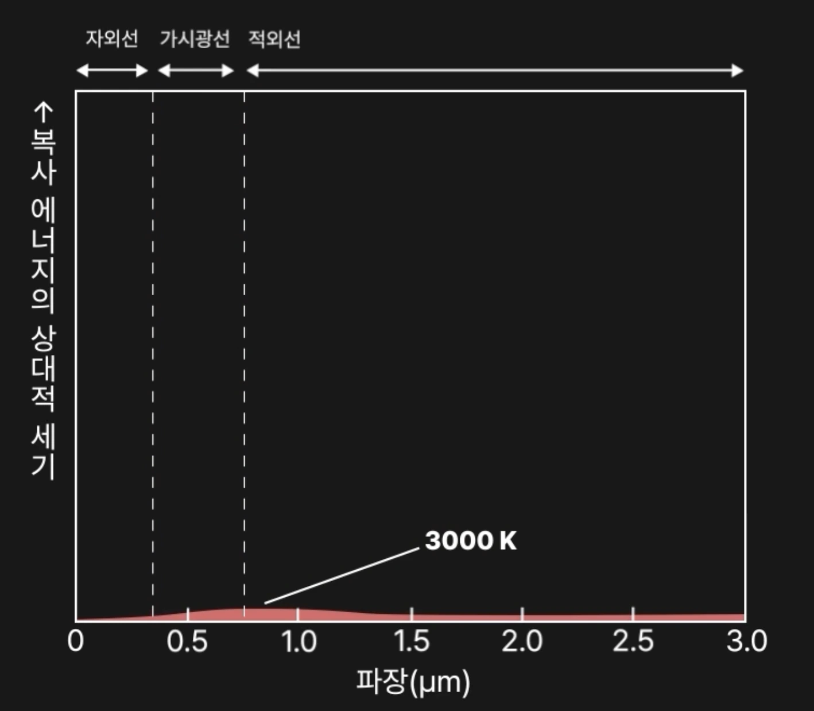
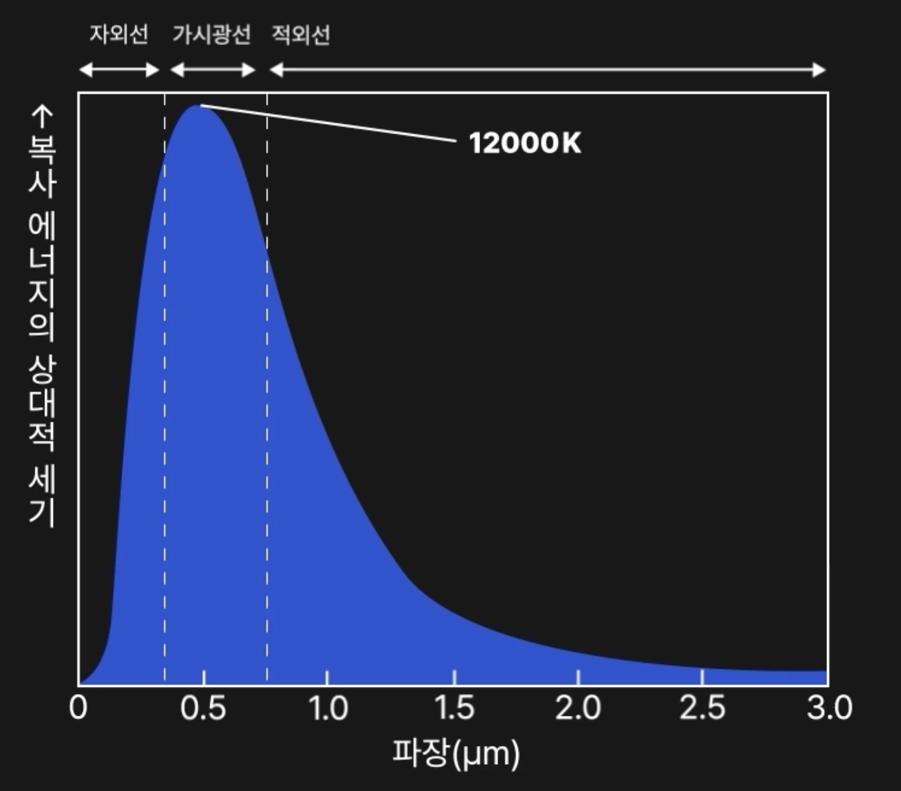

우주를 통해 배우는 온도의 색상
프롤로그
이 문서에서는 인간의 본능적인 색 인식체계와 물리적인 빛과 색의 원리가 어떻게 다른지를 하나씩 설명합니다. 인문학적인 색채 연상 작용부터 현대 기술에 적용된 예시인 열화상 카메라, 흑체복사와 플랑크 곡선이라는 물리학의 영역까지 아울러 우주의 빛과 색상에 대하여 설명합니다.
1.빨강과 파랑
만약 화장실의 색상이 반대로 되어 있다면 어떨까요? 아마 들어가기 전에 망설이거나, 잘못 들어가 깜짝 놀라는 불편을 겪을 것입니다.
수도꼭지를 이용할때도 우리는 본능적으로 빨간 쪽으로 손잡이를 돌려 뜨거운 물을 사용하고, 파란쪽으로 손잡이를 돌려 차가운 물을 사용합니다. 만약 이 색상이 반대로 잘못 배치되어 있었다면 어떨까요? 아마 손을 데이거나 차가운 물을 계속 맞으며 보일러가 고장 났다고 생각 할 것입니다.
2.특정 색에서 온도를 느끼는 이유
우리가 색에서 온도를 느끼는 것은 단순한 학습의 결과가 아닙니다. 이는 인류의 DNA에 새겨진 생존 본능에 가깝습니다. 역사적으로 인간이 통제하거나 마주한 고온의 대상, 즉 '불'은 붉은색이었기 때문입니다.
파란색은 물, 얼음, 그늘과 연관되며 차가움과 안정을 상징하며, 위는 우리 인류에게 매우 지배적인 인식 입니다.
2. 색채연상작용
이처럼 우리가 색상에서 특정한 느낌을 받는 것을 색채연상작용 이라고 하며, 견고한 문화적 약속으로 자리 잡았습니다.
2.1 열화상 카메라
색채연상작용은 첨단 기술인 열화상 카메라에도 그대로 적용되었습니다. 열화상 카메라의 빨간 부분은 정말 뜨겁기 때문에 빨갛게 보이는 걸까요?
2.2 슈도 컬러(Pseudo-color)
열화상 카메라의 빨간 부분은 정말 뜨거워서 빨간색으로 기록된 것이 아닙니다. 카메라는 단지 열 에너지, 적외선 데이터 만을 촬영하고 수집할 뿐입니다
엔지니어들은 열화상 카메라에서 수집한 온도 데이터를 사람이 한눈에 알아볼 수 있도록 색을 입히는 작업을 합니다. 이를 슈도컬러(Pseudo-color) 라고 하며 사용자는 빨간 부분은 온도가 높고, 파란 부분은 온도가 낮다는 것을 확인하여 직관적으로 데이터를 이해할 수 있습니다.
3. 파랑은 차갑다는 인식을 깨는 우주
열화상 카메라에서는 색이 온도를 설명하기 위한 도구에 불과했습니다. 우리의 인식에서 파랑색은 차갑다는 것이 당연하지만, 우주에서는 상황이 완전히 달라집니다. 온도가 더 뜨거운 별이 푸르게 빛납니다.
3.1 베텔게우스 vs 리겔
이러한 차이는 서로 다른 색을 띠는 별을 비교하면 더욱 분명하게 드러납니다. 붉은 별과 푸른 별은 단순히 외형이 다른 것이 아니라, 표면 온도에서 큰 차이를 보입니다.
베텔게우스 (Betelgeuse)
표면 온도 약 3,000K의 적색 초거성입니다. 온도가 낮아 붉은색 빛을 주로 방출합니다.
리겔 (Rigel)
표면 온도 약 12,000K의 청색 초거성입니다. 매우 뜨거워 파란색 빛을 강하게 뿜어냅니다.
3.2 반사 vs 방출
우리의 당연했던 색상 인식이 우주에서 뒤집히는 이유는 색의 원리가 근본적으로 다르기 떄문입니다. 반사와 방출의 원리를 알면 이해하기 쉽습니다.
반사 (Reflection)
일상의 물체는 빛을 반사하며, 반사는 외부에서 입사한 전자기파가 물체 표면과 상호작용한 후 다시 외부로 되돌아가는 현상입니다. 이때 물체는 에너지를 스스로 생성하지 않으며, 단지 들어온 에너지의 일부를 되돌려 보냅니다.
방출 (Emission)

반면 방출은 물체가 자신의 내부 에너지, 주로 열에너지를 전자기파 형태로 내보내는 현상입니다. 별, 즉 항성이 에너지를 방출하며, 이 과정은 외부에서 빛이 들어오지 않아도 일어납니다. 온도가 있는 모든 물체는 항상 에너지를 방출하고 있습니다.
4. 빛을 방출하는 흑체복사
흑체복사는 모든 파장의 빛을 완벽하게 흡수하고, 그 에너지를 온도에 따라 다시 방출하는 이상적인 물체인 흑체에서 나타나는 복사 현상입니다. 실제로 완벽한 흑체는 존재하지 않지만, 별과 같은 고온의 천체는 흑체와 매우 유사하게 행동합니다.
흑체복사의 가장 중요한 특징은 방출되는 빛의 분포가 물체의 재질이 아니라 오직 온도에 의해서만 결정된다는 점입니다. 이 특성 덕분에 우리는 별의 색을 통해 그 별의 온도를 추정할 수 있습니다.
4.1 플랑크 곡선
플랑크 곡선은 흑체가 방출하는 빛의 세기를 파장별로 나타낸 그래프입니다. 이 곡선은 모든 파장을 연속적으로 포함하며, 특정 파장에서 가장 강한 에너지를 방출합니다.
플랑크 곡선에서 가시광선의 영역은 극히 좁으며 파랑색으로 갈수록 자외선의 영역에 가깝고, 빨간색으로 갈 수록 적외선의 영역에 가깝습니다.
5,000K 의 별
별의 온도가 낮을수록 플랑크 곡선의 최고점은 붉은색 영역에 위치합니다. 그래프의 모양이 완만하고 낮은 형태입니다
12,000K 의 별
온도가 높아질수록 그 최고점은 파란색 영역으로 이동합니다. 동시에 전체 방출 에너지의 양도 크게 증가합니다.
푸른 별은 단순히 색만 다른 별이 아니라, 붉은 별과 비교할 수 없을 만큼 뜨거운 온도를 가진 별입니다.
5. 초록색 별이 없는 이유
가시광선 스펙트럼에는 분명 초록색이 존재하지만, 실제로 초록색으로 보이는 별은 존재하지 않습니다. 이 역시 플랑크 곡선을 통해 설명할 수 있습니다.
태양은 5800K 의 온도를 가지고 있으며, 에너지의 정점이 정확히 초록색에 위치합니다. 태양이 초록색이 아닌 이유는 별은 특정 한 가지 색만 내는 것이 아니라, 가시광선 스펙트럼의 모든 색상을 동시에 방출합니다. 설령 가장 강하게 방출되는 파장이 초록색 영역에 있더라도, 빨간색과 파란색 빛 역시 함께 방출됩니다.
인간의 눈은 이 빛들을 합쳐서 인식하기 때문에, 이러한 별은 초록색이 아니라 흰색이나 연한 노란색에 가깝게 보이게 됩니다. 태양이 대표적인 예입니다.
6. 핑크색 별이 없는 이유
핑크색 별이 존재하지 않는 이유는 초록색 별과는 조금 다릅니다. 핑크색은 스펙트럼 상에 존재하는 하나의 파장이 아니라, 여러 색이 섞여 만들어지는 색이기 때문입니다.
우리가 인식하는 핑크색은 주로 빨간색과 파란색이 함께 보이고, 초록색 성분이 거의 없을 때 만들어집니다. 그래프가 M자 모양이여야 할 겁니다. 하지만 M자 모양의 플랑크 곡선은 존재할 수 없습니다. 흑체복사는 항상 모든 파장을 연속적으로 방출하므로, 핑크색 별이 존재하기는 어렵습니다.
따라서 별과 같은 흑체에 가까운 천체는 핑크색으로 보일 수 없으며, 실제로 관측되는 별의 색은 빨강, 노랑, 흰색, 파랑 계열로 제한됩니다.